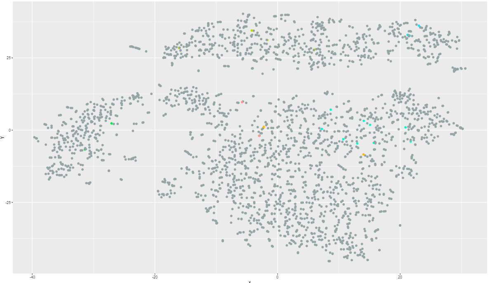

PBMC 2700 tutorial
Jinhwan Kim
2020.05.05
Source:vignettes/pbmc-2700-tutorial.Rmd
pbmc-2700-tutorial.RmdIn this tutorial, we will use PBMC analysis data from Seurat.
To get full description about experiment, refer here
We assume that all dependent packages is already installed. see How to install CellEnrich document.
Required Data
Pre-processed data is included in github repository.
| Filename | Parameter | Type |
|---|---|---|
pbmcData.RData |
CountData |
dgCMatrix |
pbmcClustinfo.RData |
GroupInfo |
Character |
Run
with these Codes, user can see interactive shiny
page.
# Download data, if not downloaded
CellEnrich::DownloadData()
load("pbmcData.RData")
load("pbmcClustInfo.RData")
CountData <- pbmcData
GroupInfo <- pbmcClustInfo
# this will run CellEnrich
CellEnrich(CountData, GroupInfo)Result
Set options before start CellEnrich.
Possible options are :
- Strategy for Differential Expressed Genes.
- Plot Options
- Gene-set and their size cutoff to used in analysis.
After 30 seconds ~ 1 min, analysis result will be appear.
used Test environment :
- OS : win 10
- CPU : i5-8400
- RAM : 16G
CellEnrich is consisted with 3 modules.
1. Plot Module

Left plot is scatter plot created with t-SNE or
U-MAP and ggplot2 that user selected in
option.
In this tutorial, scatter plot is
t-SNEresult.-
this scatter plot can be emphasized with 4 buttons:
TOCOLORbutton ( default ) will colorize as group information.TOGRAYbutton will colorize all dots to gray color.

-
FREQUENTbutton will colorize frequently enriched cell in each group.

-
SIGNIFICANTbutton will colorize most significantly enriched cell in each group.

Right plot is histogram plot created with highcharter to
see distribution of Group / Cell labels.
- In this tutorial, 9 group exists.
User can download both result with save button (LEFT)
and export options in right top (RIGHT).

2. Marker Module

This marker module will show Differentially Expressed genes in :
Each group ( using findMarker in scran )
Each group and pathway specific ( using fisher’s exact test )
3. Pathways Module

This pathway module will show significant pathways for each groups in table format.
To use emphasize feature, user should clear sortable
list with CLEARLIST button.

For each group, only 1 pathway can be selected for emphasize in scatter plot.

2 emphasize option can be used.
-
WITHOUTORDER: This will emphasize cells with selected pathway is enriched.

-
WITHORDER: This will emphasize cells with selected pathway is enriched. and also it will generate path based on order insortable

Using SAVE button in pathways module, user can download
pathway - group significance table.